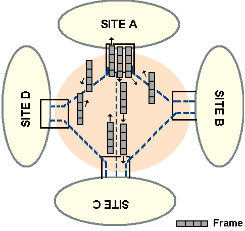

Created in 1990, Frame Relay
interface
has points in common with the
X25
standard interface. Like X25, a single interface is used to access multiple
destinations, and like X25,
virtual circuits
are used to exchange information
between devices. On the other hand, Frame Relay operates at the physical and
data link layers only in order to provide best frame delivery service.
Virtual Circuits
Permanent Virtual Circuits (PVCs) are connecting a frame relay user’s site to
selected remote sites. A PVC always links the same pair of sites.
The figure below shows how a site A can be connected to sites B, C or D by
means of virtual circuits. Outgoing
frames
from site A to any other site pass
through a point-to-point link joining the site A to the network. Similarly,
incoming frames are passed to site A across the point-to-point link.

Frames transmitted to and from sevral sites.
The Data Link Connection Identifier
Each incoming and outgoing frame contains a number (
the Data Link Connection Identifier or DLCI
) that identifies its virtual circuit. The DLCI number is not
the same along the network even if the virtual circuit is the same. That means
that a virtual circuit identified by the number 37 at site A might appear as
circuit number 17 at site B. It is the network that have to fill in a DLCI that
means something to site A before passing the frame down the link to site A. The
figure below shows an example of how local DLCIs can be used to identify
virtual circuits between sites A, B, C and D.
Assignement of DLCIs.
The Frame Relay MIB (1.3.6.1.2.1.10.32)
The Frame Relay
MIB
was created in
RFC
1315 and contains three groups :
The Data Link Connection Management Table
The Circuit Table
The Error Table
Data Link
Connection Management Table
The device user periodically polls the network by sending a "keepalive" status
inquiry, it also requests a full status report at regular intervals.
The Data Link Connection Management Table contains configuration parameters
that include the base polling intervals and the number of intervals between
status requests.
Other parameters indicate the maximum number of virtual circuits that can be
opened and whether multicasting is support. For example, a multicast to all
circuits partner asking for their
IP
addresses can be used to build an Address
Resolution Table.
The Frame Relay
Circuit Table
The Frame Relay Circuit Table contains each interface/DLCI combination and an
entry for each circuit. It is explained because one frame relay interface can
support multiple virtual circuits, each identified by a DLCI, and because a
device can support several frame relay interfaces.
An entry records the Circuit Throughput, Committed Burst, and Excess burst. It
also contains counts of incoming and outgoing traffic, and indicates the
frequency of incoming and outgoing congestion for each circuit. All the
statistical counts for a virtual circuit are measured from the time that the
virtual circuit was created.
The Frame Relay
Error
Table
The Frame Relay Error Table records the most recent errors for each interface.
Each error is stored as a bad data frame or as a bad management frame and the
time at which the error was detected is also recorded.